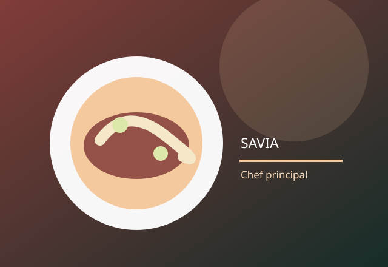
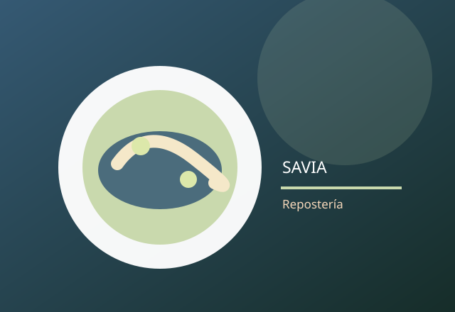
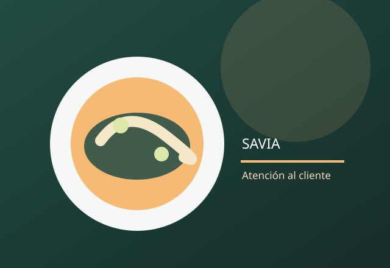

Etapa 1: Direccion de cocina
Aki — Jefe de cocina
Aki coordina la cocina, establece los platos y organiza el trabajo de todos.
Las personas detrás de cada experiencia.

Aki coordina la cocina, establece los platos y organiza el trabajo de todos.

Elend prepara ingredientes y salsas, y apoya al jefe de cocina durante la cocina.

Yennefer recibe a los clientes, toma sus pedidos y sirve los platos.
Aki dirige la cocina, Elend apoya la preparación y Yennefer atiende a los clientes. En equipo, ofrecen una experiencia agradable.